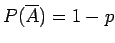

Inhalt Index DeskTop Bronstein

 Wahrscheinlichkeitsrechnung und Mathematische Statistik Wahrscheinlichkeitsrechnung Diskrete Verteilungen
Wahrscheinlichkeitsrechnung und Mathematische Statistik Wahrscheinlichkeitsrechnung Diskrete Verteilungen


Handelt es sich um eine zweistufige Grundgesamtheit mit zwei Klassen von Elementen, von denen die eine Klasse M Elemente mit der Eigenschaft A enthält, die andere N - M Elemente, die die Eigenschaft A nicht besitzen, dann lassen sich bei der Frage nach den Wahrscheinlichkeiten P(A) = p und  zwei Fälle der zufälligen Entnahme von Elementen betrachten, der eine mit Zurücklegen der n gezogenen Elemente, der andere ohne Zurücklegen der gezogenen n Elemente. Die gezogenen n Elemente, darunter k mit der Eigenschaft  , werden Stichprobe genannt, wobei n der Umfang der Stichprobe ist. Man kann diesen Sachverhalt mit Hilfe des Urnenmodells illustrieren.
, werden Stichprobe genannt, wobei n der Umfang der Stichprobe ist. Man kann diesen Sachverhalt mit Hilfe des Urnenmodells illustrieren.